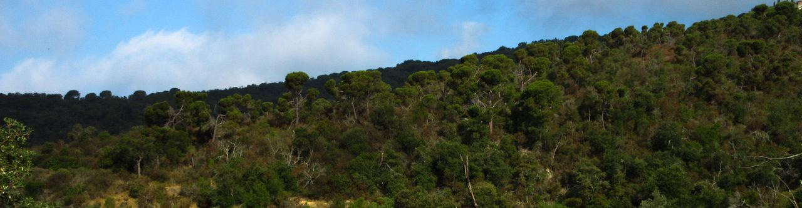

Ruta · Platja d'Aro
Ruta circular que comença al nucli antic de Castell d'Aro i que ens descobreix le s fonts d'aquests estreps de les Gavarres, abans punts de recés molt importants per a tots els bosquetans que hi…